Pracuję dla Uzdrovisco, którego grupa docelowa to dojrzałe kobiety: spokojny ton, prawdziwe twarze, edukacja o składnikach.W portfolio zobaczysz też Pantalones, polską markę z certyfikowaną bielizną organiczną i zdecydowanie młodszą odbiorczynią. Do niej dopasowałam język, humor i styl prowadzenia profilu.
Dogadam się z każdym
Praca w domu produkcyjnym nauczyła mnie znajdować wspólny język z absolutnie każdym. Pracowałam z aktorami, takimi jak Joanna Brodzik, Joanna Koroniewska i Janusz Chabior, nagrywam dojrzałe kobiety, ale równie dobrze czuję się, nagrywając zwykłe dziewczyny, które pierwszy raz stoją przed kamerą.
Najważniejsze jest zaangażowanie
Zasięg jest ważny, ale to zaangażowany odbiorca buduje z marką relację, wzmacnia jej wizerunek i ostatecznie kupuje. Dlatego liczę rozmowy, nie tylko wyświetlenia: w Uzdrovisco mediana komentarzy pod rolką wzrosła z 7 do 69, a pod zdjęciami z 5 do 72.
Myślę projektami, nie postami
Uwielbiam wyzwania, nowe projekty i nieszablonowe akcje. Z Pantalones zabrałyśmy walizkę pełną polskich, jakościowych marek do Lizbony. Z okazji Światowego Dnia Zespołu Downa zrobiłyśmy kampanię świadomościową z Kasiąi Marysią ↗. Dla Uzdrovisco odpaliłam ślepe testy z testerkami.
Jestem wielozadaniowa
Pracowałam jako account manager w agencjii jako asystentka produkcji w domu produkcyjnym. Myślę strategicznie, piszę posty i copy, nagrywam, montuję, moderuję i produkuję sesje. Do każdej z tych rzeczy podchodzę kreatywnie i z dbałościąo estetykę.
Mam zespół agentów AI
Agenci AI usprawniają moją codzienną pracę: wspierają mnie w montażu, kampaniach i analizie wyników. AI absolutnie mnie fascynuje: ciągle odkrywam nowe możliwości, optymalizuję czas pracy i zostawiam więcej przestrzeni na kreację.
doświadczenie z dużymi markami
Pracowałam z markami, które zna każdy: w agencji,w domu produkcyjnym, przy produkcji sesji i na freelansie.
Agencja Livebrand Digital Communicationscontent designer, potem account manager · 2015–2021
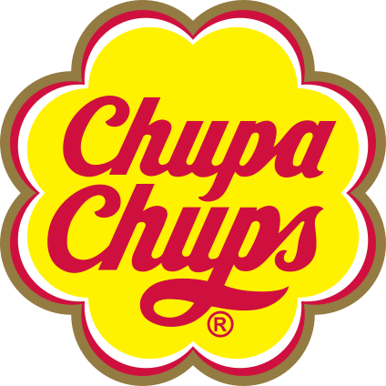
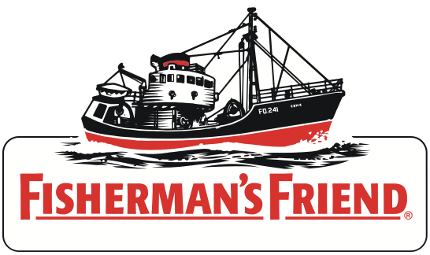
Warsaw Marathon
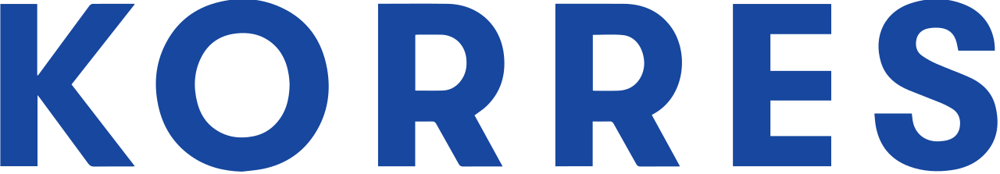
Dom produkcyjny Lucky Luciano Picturesasystentka produkcji · 2020–2021
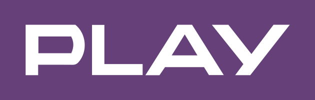
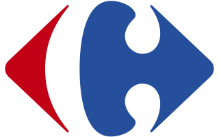
Labcon: produkcja sesji zdjęciowychproducentka sesji · 2021
Freelanceprowadzenie social mediów, moderacja, kampanie, eventy · od 2019
Przed premierą nowej linii szukałyśmy 10 testerek. Każda dostała tajemniczą paczkę z kremem bez etykiety i nagrywała pierwszą reakcję: konsystencję, zapach, wrażenia, nie wiedząc, co testuje. Dopiero potem odkrywała produkt i nagrywała drugi film. Rozwiązanie zagadki przyniosła rolka z Agnieszką:w słoiczku ukrywała się nowa linia BIO ELIXIR.
„Super recenzje 😍 i mega pomysł z takimi testami 👏👏👏”„Najbardziej lubię takie testy: bez etykiety, bez sugerowania się nazwą, tylko szczere pierwsze wrażenie”
Mediany i zaangażowaniez publicznych danych: (polubienia + komentarze) / wyświetlenia. Rolki z konta marki, bez płatnej promocji i bez kolaboracji twórczyń. Porównanie: 2025 vs 2026.
zaangażowanie miesiąc po miesiącu
20252026, ze mną
Styczeń–październik, 2025 vs 2026.
strategia · content · kampanie
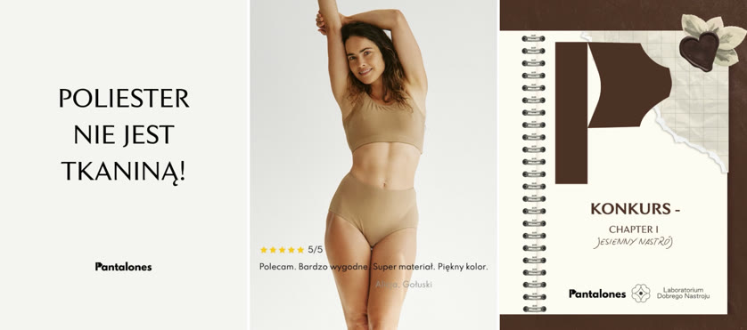
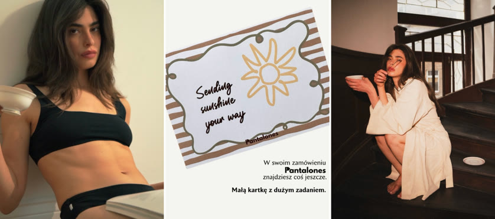
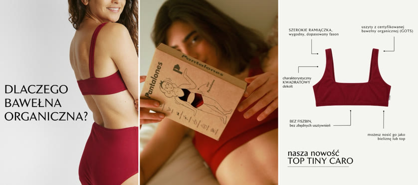
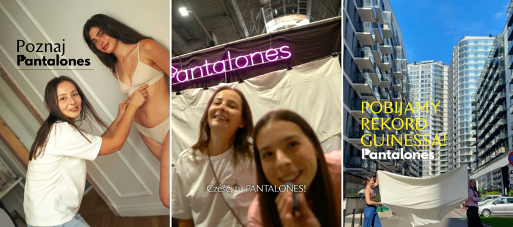
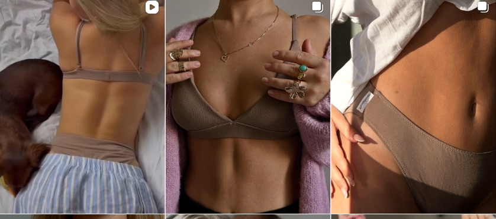
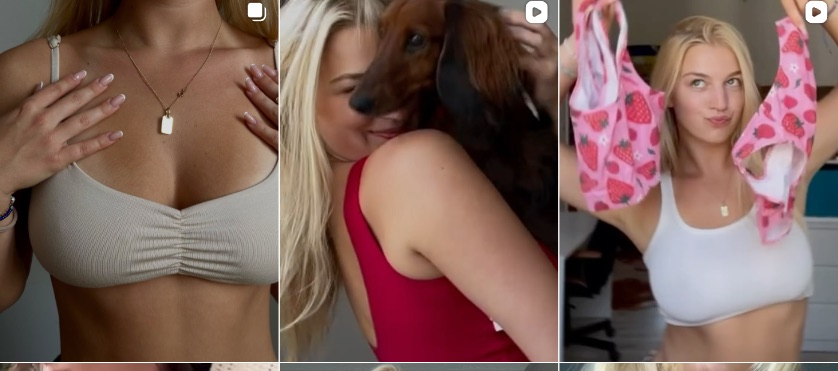
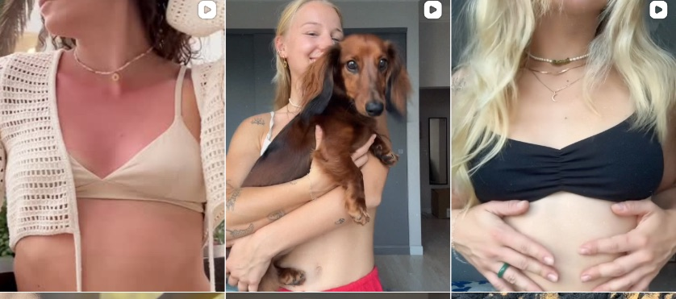
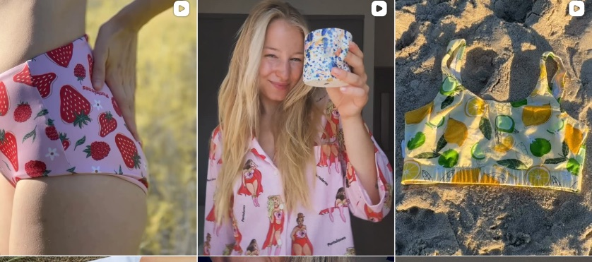
przed · 09.2025po · 09–10.2026
Feed przed i po‹ przeciągnij, aby porównać ›
feed, który ma styl
Jesień 2026: edukacja o materiałach („Twoja skóra wie, z czego są Twoje majtki”), seria z lekarką, nabór testerek, opinie klientek i spójna typografia marki.
2,15%z 1,25zaangażowanie
75z 32polubień, mediana
17z 2komentarzy, mediana
Porównanie: 2025 vs moje miesiące w 2026.
projekt · Lizbona · 31.05–25.06.2026
walizka pełna polskich marek
Zapowiedź projektu: lecimy!11,3 tys. wyświetleń · 172 polubienia · 66 komentarzy · na Instagramie ↗
Polecieliśmy do Lizbony z walizką pełną polskich, jakościowych marek. Co trzy dni otwieraliśmy ją w nowym konkursie z inną marką partnerską: 10 rolek, 11 marek i jedna walizka, która przez cały czerwiec trzymała obserwatorki w napięciu.
wyniki całego projektu · 10 rolek
98,5tys.wyświetleń
2 413polubień
1 278komentarzy
3,75%zaangażowania, 3× średnia z 2025
Suma z 10 rolek projektu (zapowiedź i 9 otwarć walizki), publiczne dane z Instagrama, wyniki organiczne.
Największe pantalony na świecie„Ale super galoty”„Hahaha pantalonów szał! 🤟 strzelam w sto!”
kreacja: niesiemy majtki 2,5 × 2 m
Niesiemy je na Targi Rzeczy Ładnych. Humor, ruch i produktw jednym kadrze.
13,6tys.wyświetleń
125polubień
42komentarze
sesje wyjazdowe
Kolekcje kąpielowe fotografujemy tam, gdzie powinny być noszone: na plaży o zachodzie słońca i przy basenie w pełnym słońcu. Zdjęcia, rolki i kolażez jednego wyjazdu żyją potem na profilu przez całe lato.
Event w Balans, Mysia 3relacja z dniaw sklepie stacjonarnym · ♥ 111 · 23 komentarze„‚Jak będą mnie chować, to tylko w Pantalones’ KOCHAM ❤️❤️❤️”„Ta minimalistyczna bielizna wygląda naprawdę przepięknie! 😍”
Kreacja: drop Navy Essentialsanimowany kolaż jak z moodboardu · ♥ 28 · 15 komentarzy„Podoba mi się ten granat. Szlachetny 💣💙”„Zapowiada się świetnie 🔥”
Nagrywam nie tylko telefonem: relacje z eventów pokazują ludzi i atmosferę marki, retro kamerka daje kadrom ziarno i klimat lat 90., który pasuje do Pantalones, a przy premierach kolekcji bawię się formą, jak w animowanym kolażu dropu Navy Essentials.
Od niedawna pracuję dla Rozwojowej Mamy. Tę rolkę w całości zmontował mój agent AI z materiałów nagranych przez klientkę: cięcia, napisy i wezwanie do zakupu.
48,7 tys. wyświetleń · ♥ 192 · 646 komentarzy · 270 udostępnień · wyniki organiczne
Relaunch Doctor Brew: cztery piwa, kampania digital, mural na Nowym Świecie i odważne zdjęcia par. Post z parą gejów zebrał falę hejtu, a marka zamieniła go w pomoc: po 10 zł za każdy hejterski komentarz dla Kampanii Przeciw Homofobii, łącznie 30 tys. zł.
Zbudowałam zespół agentów AI, który wspiera mnie w montażu rolek, kampaniach i analizie wyników. Pomysł, nagranie i akceptacja zostają po mojej stronie.